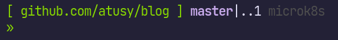

私のzshrcの推しポイントを簡単にまとめておく
zshrcはGitHubで管理しているので、推しポイントへのリンクも適宜掲載しておく
https://github.com/atusy/dotfiles/blob/c654f90e8ec9ebbc18543d8f0349f7f8202f20c0/dot_zshrc#L20-L36

git status、kubernetesのコンテキストpwdすればいいだけgitprompt 関数に依存
でもプラグインの読み込みに失敗した時とかにエラーが出て欲しくないので、プラグイン読み込み前に、無能な gitprompt 関数を定義してある
function gitprompt {
:
}sudo viでもsudo vimなどとエイリアスが効くよう、alias sudo='sudo 'しておく https://github.com/atusy/dotfiles/blob/c654f90e8ec9ebbc18543d8f0349f7f8202f20c0/dot_zshrc#L153alias top='htop'などとbetter somethingへのエイリアスは、そのコマンドが存在することを command -v htop などと確認しておく https://github.com/atusy/dotfiles/blob/c654f90e8ec9ebbc18543d8f0349f7f8202f20c0/dot_zshrc#L160-L162kubectlはコンテキスト間違いによる事故を防ぐ工夫をこらした関数にエイリアス
KUBE_CONTEXT環境変数の中身とcurrent contextが違ったら、KUBE_CONTEXT環境変数に望ましいコンテキストを入力した上で、この値をcurrent contextに設定するよう促す https://github.com/atusy/dotfiles/blob/c654f90e8ec9ebbc18543d8f0349f7f8202f20c0/dot_zshrc#L203-L223kubectxに上記のKUBE_CONTEXTの更新機能を追加する https://github.com/atusy/dotfiles/blob/c654f90e8ec9ebbc18543d8f0349f7f8202f20c0/dot_zshrc#L197-L202↓を仕込んでおくと、<CTRL-X><CTRL-E>で入力中のコマンドを好きなエディタで編集できる
export EDITOR=nvim # 好きなエディタ
autoload -Uz edit-command-line
zle -N edit-command-line
bindkey "^x^e" edit-command-line私はNeovim内でNeovimが入れ子になるのを防ぐため、ちょっと工夫を凝らしている
EDITOR_CMDを優先しEDITORにフォールバック https://github.com/atusy/dotfiles/blob/c654f90e8ec9ebbc18543d8f0349f7f8202f20c0/dot_zshrc#L146-L150EDITOR_CMDを設定 https://github.com/atusy/dotfiles/blob/44cbfacfafab7f3dd6cebe7c6ad557816f64ed0f/dot_config/nvim/init.lua#L229top + スペースを入力したら、htopに展開するなど、better somethingへのエイリアスをスニペットとして展開し、自分が本当に使っているコマンドが何か常に意識できるようにするping + スペースを入力したら、ping -c 5に展開するなど、常用する引数をスニペットに登録して、入力を短縮するgit操作ghqで管理しているレポジトリのディレクトリへのcdghコマンドをfzfでもっと便利にするcd-gitrootコマンドでGitでバージョン管理しているディレクトリの深い層からプロジェクトルートへ飛べるalias gd='cd-gitroot'している